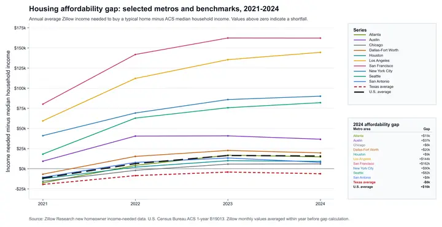
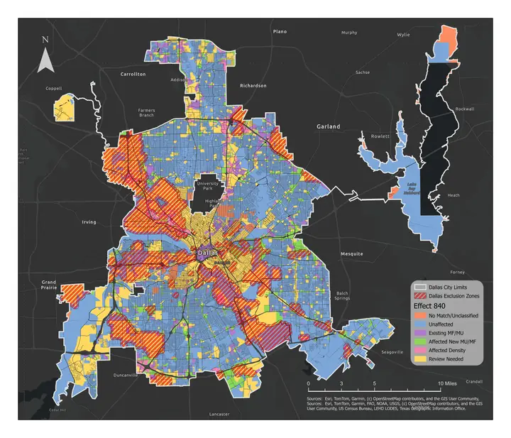
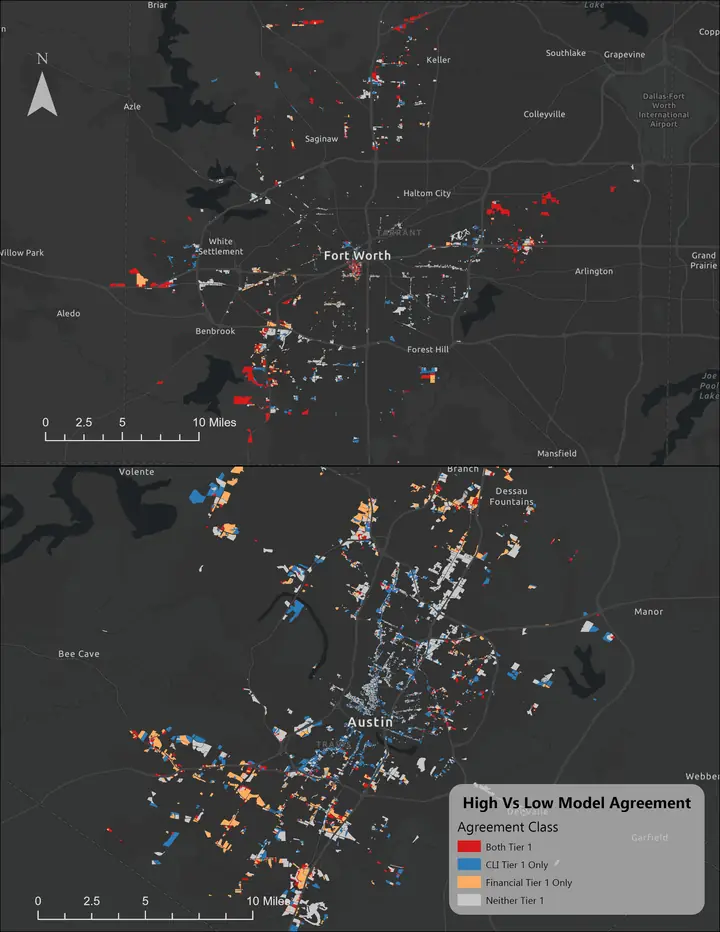

2,470 sq mi
Processed parcel universe across 18 Texas cities.
285 sq mi
Legally eligible footprint after statutory exclusions.
80 sq mi
Top-tier overlap between the CLI and financial-gap models.

What Could SB 840 Actually Change?
Texas has built a lot of housing by growing outward. SB 840 raises a more empirical question: how much room exists inside already-urbanized commercial and mixed-use land?

Where Does SB 840 Actually Apply?
SB 840 is statewide law, but its footprint depends on local zoning categories, legal exclusions, and city-specific interpretation.

What Is Actually Likely To Happen Under SB 840?
Legal eligibility is not redevelopment. This post compares conversion likelihood and financial upside to identify where the two signals align.
Charts and maps in this series
The static figures in the posts summarize the main patterns. The interactive viewers let readers inspect the city-level parcel results directly.
About this series
These research notes condense a larger article manuscript on SB 840 into a three-part public series on Texas housing context, legal geography, and likely conversion patterns across 18 zoned Texas cities. They are written for policymakers, planners, journalists, and researchers to gain insight on the effects of SB 840 without reading the full technical paper.
While the full article remains under review for publication, these pages adapt the project's findings and should not be treated as verbatim excerpts of the manuscript. Map counts, city results, and interactive tools may be updated as permits, implementation guidance, and corrected GIS layers become available.
Research affiliated with Texas Christian University; funding provided by TCU Center for Urban Studies.
Primary statute: Texas S.B. 840 (89th Legislature, enrolled text).
How to cite this series
Crotty, Sean M., Andres Gamez, and Kyle Walker. Texas SB 840: From Legal Possibility to Likely Change. Research note series, July 2026. https://jandresg-g.github.io/sb840-notes/.